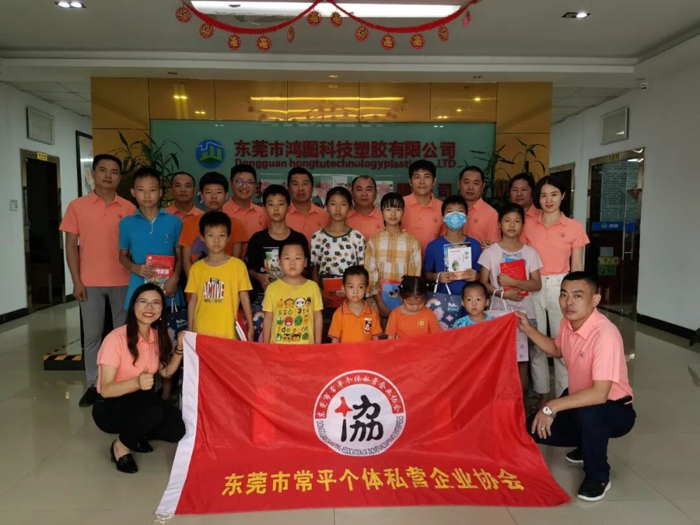
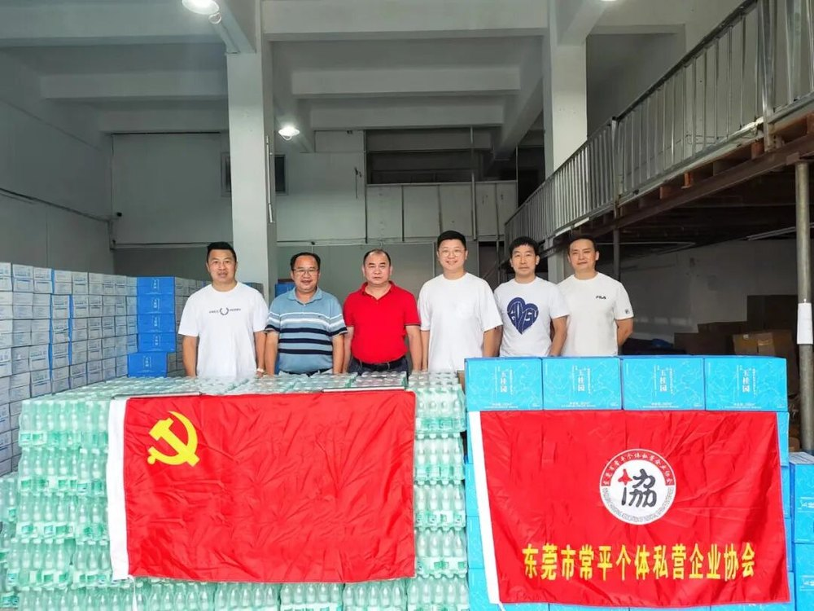
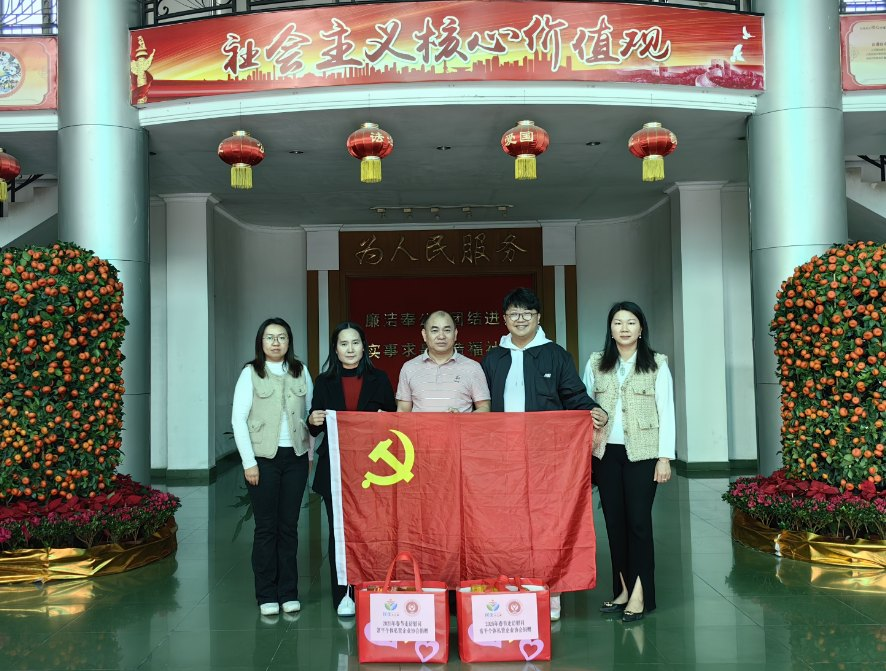
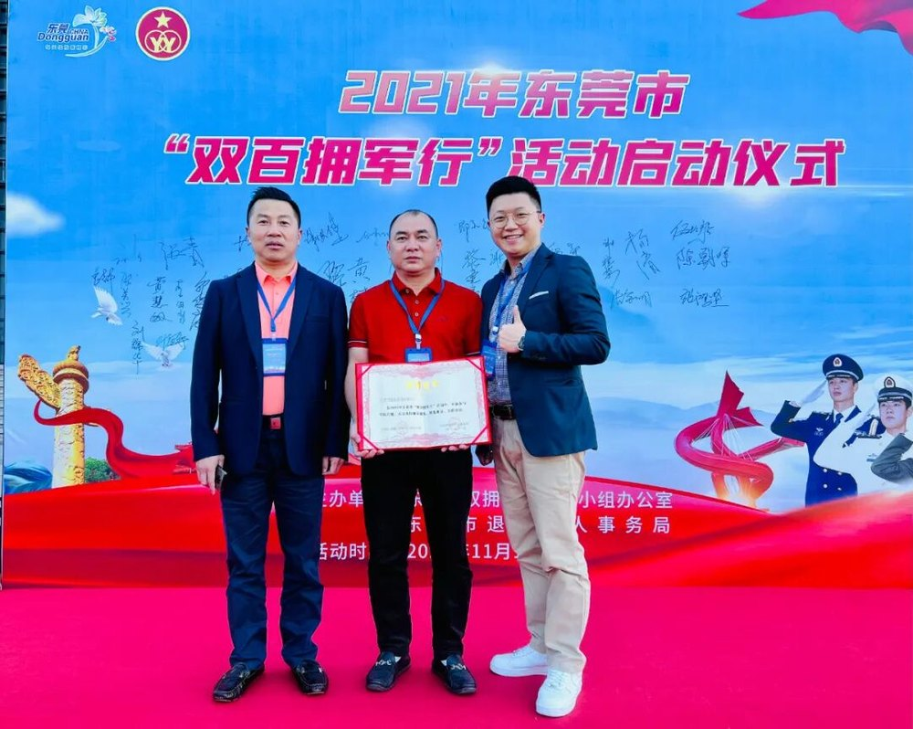
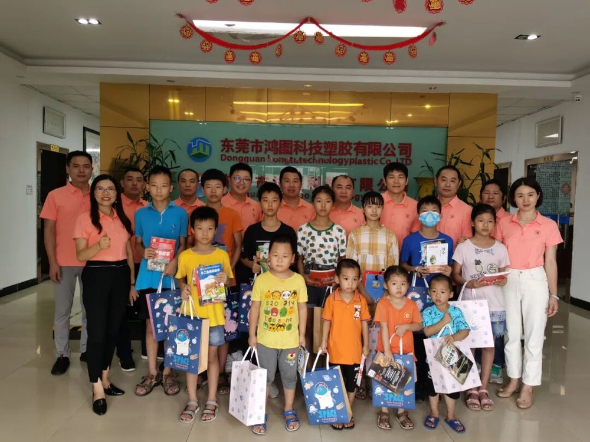
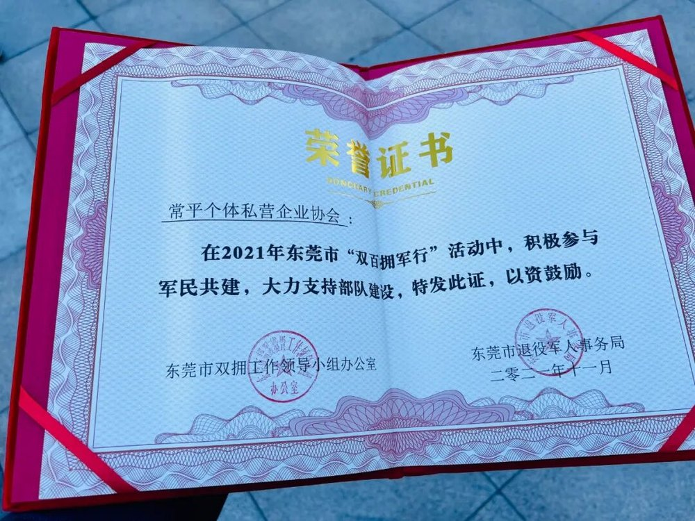
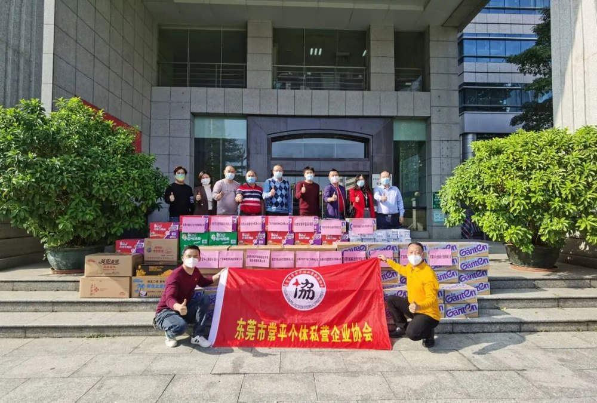

MEMBERS
会员服务
面向常平镇个体工商户与私营企业，搭建交流、学习、互助与展示的平台。
协会会员来自常平镇制造业、商贸服务、餐饮酒店、市场经营、财税代理、环保工程、家居制品、电子与酒品流通等多个行业。2019年协会理事会成员单位达75个，2020年在册登记理事以上成员88位，会员队伍持续壮大。
75 个理事会成员单位（2019年度）
88 位在册理事以上成员（2020年度）
48 次年度会员交流活动（2020年度）
878 家次年度服务会员（2020年度）
BENEFITS
会员服务内容
MEMBER 01
政策传达
惠企政策与申报要点及时传递
MEMBER 02
信息互通
经营资讯与活动通知便捷获取
MEMBER 03
交流平台
会员互访、座谈与展示机会
MEMBER 04
培训学习
专题讲堂与能力提升活动
MEMBER 05
权益维护
意见反映与合规疑问答疑
MEMBER 06
公益参与
助学、慰问与共建活动
COUNCIL
第二届理事会
2021年8月8日第二次会员代表大会选举产生。
会长
袁志华
秘书长
李达豪
副秘书长
吴辉红
常务副会长
李达豪、利柱坚、卢灼权、吴耀辉、李海南、邓杨金、李淑芳、易红梅、许桂波
常务理事（公开活动报道）
龙宇、邹易江、陈伟贤、梁四旺、王楠
MEMBER COMPANIES
部分会员企业
积极参与协会交流、公益捐赠与走访活动的会员企业。
东莞市勤华市政工程有限公司东莞市常平富豪酒店东莞市勤通实业投资有限公司东莞市浩如海市场服务管理有限公司东莞市燚品餐饮管理有限公司东莞市鸿图塑胶科技有限公司东莞市益国环保工程有限公司广东神鹰塑料集团有限公司东莞市川合财税代理有限公司东莞市常平木伦综合市场服务管理有限公司广东万恒通家居制品有限公司东莞市黔山酒品有限公司东莞市通聚电子有限公司东莞市常平川粤茶叶商行
MOMENTS
会员活动剪影








入会相关事宜与会员活动安排，可致电协会秘书处 0769-81080628 咨询，或关注官方公众号 changpinggsx 了解协会动态。